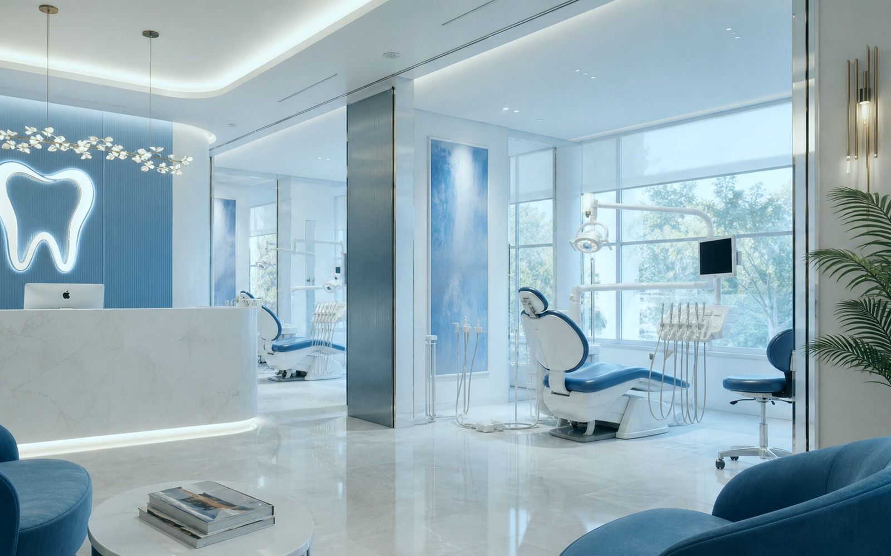
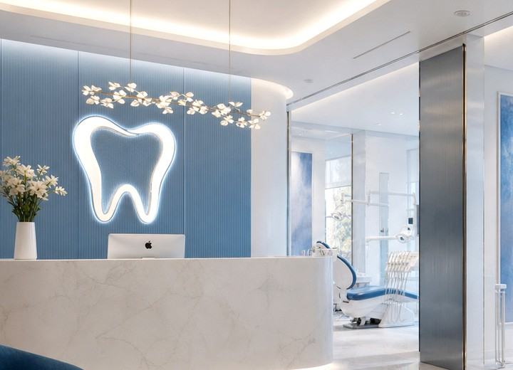
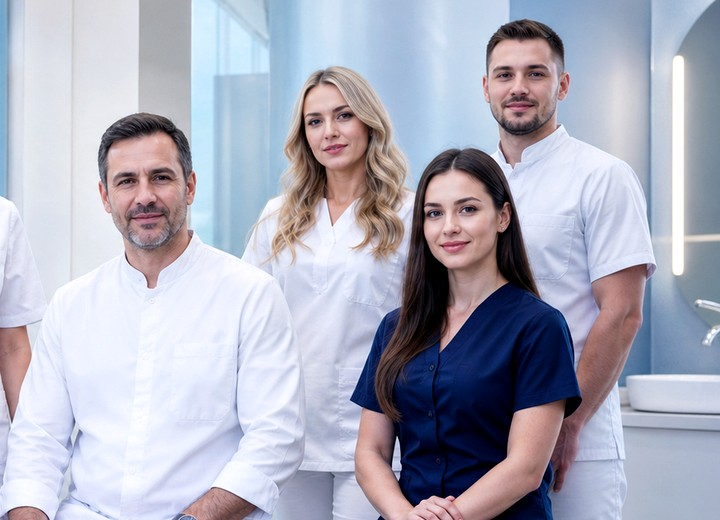

Интерьер
Чистые линии, мягкий свет и ощущение приватности.
Богородчане выбирают BORC как лучшую альтернативу клиникам Нижнего Новгорода: дорога в Ворсму занимает 35–40 минут на автомобиле, а уровень технологий и сервиса — столичный. Для пациентов из Богородска есть удобный график без записи в очередь и приоритетные слоты в первой половине дня.


Премиальный интерьер, продуманная логистика и сильная команда врачей усиливают доверие к клинике.
Чистые линии, мягкий свет и ощущение приватности.
Микроскопы, цифровая диагностика, современное кресло.

Чёткая коммуникация и понятный маршрут пациента.
BORC открылся в Ворсме в 2018 году. Идея была простая: построить клинику, где не нужно ехать в Нижний Новгород ради хорошего врача и нормального оборудования.
За семь лет приняли 5000+ пациентов из из Богородска, Богородска, Павлова, Нижнего Новгорода и Москвы. Поставили несколько сотен имплантов. Закрыли тысячи каналов под микроскопом. Никогда не использовали материалы «по акции».
Каждое кресло оборудовано установкой Sirona — той же, что стоит в премиальных клиниках Европы. Каждый врач — узкий специалист, не «универсал». Каждое лечение — по протоколу, а не «как пойдёт».
Лицензия № ЛО-52-01-007890 выдана Министерством здравоохранения Нижегородской области.
Не реклама — практика, на которой строится клиника с 2018 года.
Первый визит — всегда бесплатный. Осмотр, снимок, план лечения. Без обязательств.
Лечение начинаем только после подписания плана с указанием цен и сроков.
Никаких компромиссов. Японские пломбы, швейцарские импланты, немецкие фрезы.
2–5 лет гарантии на любую работу. Письменно, в договоре. Без оговорок.
Автоклавы класса B, индикаторы стерильности на каждом инструменте.
Не назначаем лечение, которое можно отложить или не делать вовсе.
Не «у нас всё есть» — конкретные модели, которые можно проверить.
Стоматологические установки уровня премиальных клиник Европы. На каждое кресло.
Увеличение до 200×. Каналы, которые иначе пришлось бы лечить «вслепую».
Низкая доза, высокое разрешение. Снимок занимает 14 секунд.
Цифровой слепок вместо силиконового. Быстро, точно, без рвотного рефлекса.
Швейцарский аппарат для профгигиены. Снимает пигментацию, не трогает эмаль.
Высший класс стерилизации в стоматологии. Каждый инструмент проходит цикл.
Из Богородска до клиники — 35 км по трассе через Шапкино и Лазарево. На автомобиле — около 40 минут. Парковка свободная, во дворе клиники.
Принимаем пациентов из районов: мкр. Восход, мкр. Кожевенный, ул. Ленина, ул. Котельникова, ул. Кашина.
Ориентиры: Богородский районный краеведческий музей, ТЦ Богородский, Кожевенный завод.
Визуальный образ работает на продажи не меньше, чем прайс и список услуг.
Запишитесь на бесплатную консультацию. Покажем клинику, оборудование, ответим на любые вопросы. Без обязательств.